Among the sovereign Demons with explicit access to this world, Doom scarcely bothers with the affairs of Noninfernals and Lesser Spectral Consorts, while Shadow Fiend passes through almost exclusively on collecting expeditions.
No one has ever seen the face hidden beneath the mask of Yurnero the Juggernaut. It is only speculation that he even has one. For defying a corrupt lord, Yurnero was exiled from the ancient Isle of Masks--a punishment that saved his life. The isle soon after vanished beneath the waves in a night of vengeful magic.
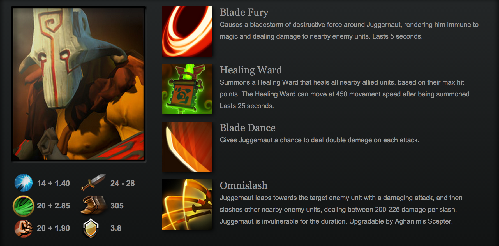
WEAVER
Description
The fabric of creation needs constant care, lest it grow tattered; for when it unravels, whole worlds come undone. It is the work of the Weavers to keep the fabric tight, to repair worn spots in the mesh of reality. They also defend from the things that gnaw and lay their eggs in frayed regions, whose young can quickly devour an entire universe if the Weavers let their attention lapse.
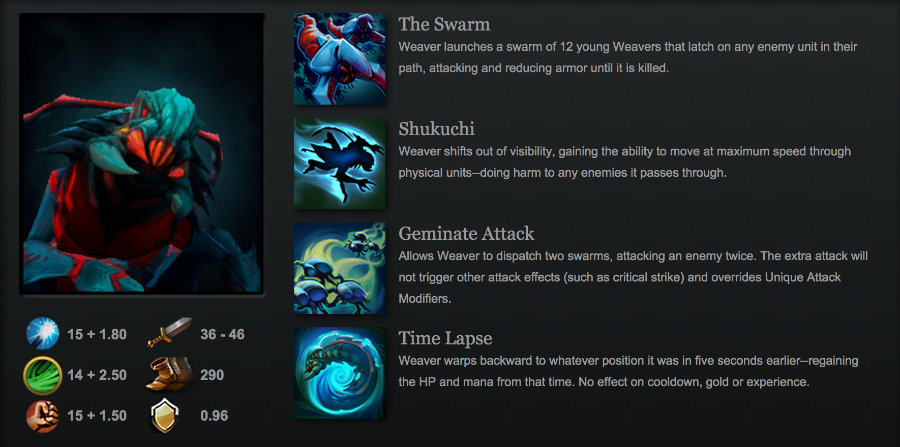
URSA
Description
Ulfsaar the Warrior is the fiercest member of an ursine tribe, protective of his land and his people. During the long winters, while the mothers sleep and nurse their cubs, the males patrol the lands above as tireless, vigilant defenders of their ancient ways.
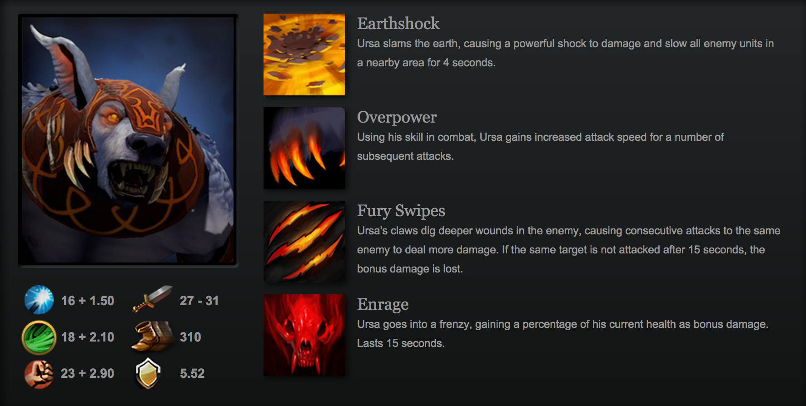
BOUNTY
Description
When the hunted tell tales of Gondar the Bounty Hunter, none are sure of which are true. In whispered tones they say he was abandoned as a kit, learning his skill in tracking as a matter of simple survival. Others hear he was an orphan of war, taken in by the great Soruq the Hunter to learn the master's skill with a blade as they plumbed the dark forests for big game.
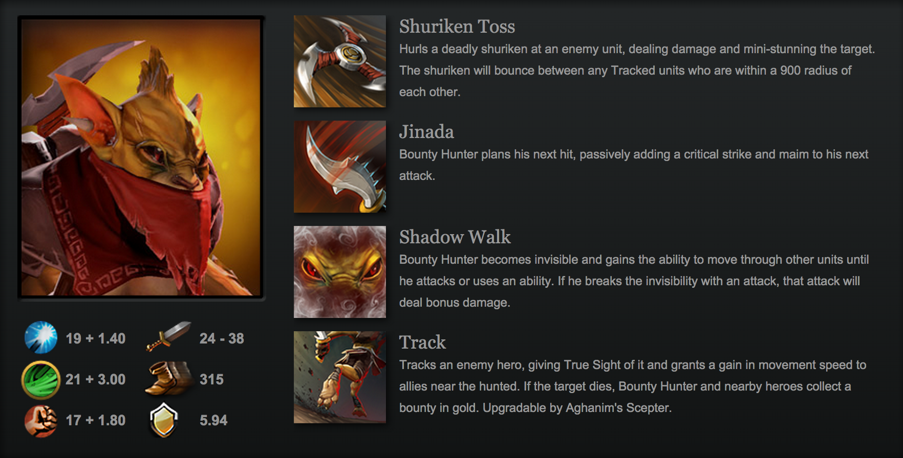
NIGHT STALKER
Description
It is said that on the dawn of the First Day, all the night creatures perished. All, that is, save one. Evil's embodiment, Night Stalker delights in his malevolence. He created the primal role of the Night Terror, the Boogeyman, and as long as there have been younglings, his is the specter summoned to terrify them. This is a role he relishes; nor are these empty theatrics.
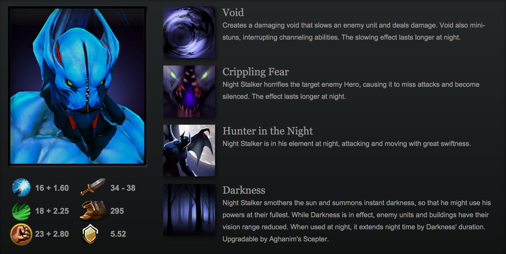
WRAITH KING
Description
For untold years, King Ostarion built a kingdom from the remains of his enemies. It was an obsessive's errand, done to pass the long eternities of a monarchy that seemed fated never to end. He believed that as long as he built up the towers of his palace, he could not die. But eventually he learned that he had been deluded... that bone itself could perish.
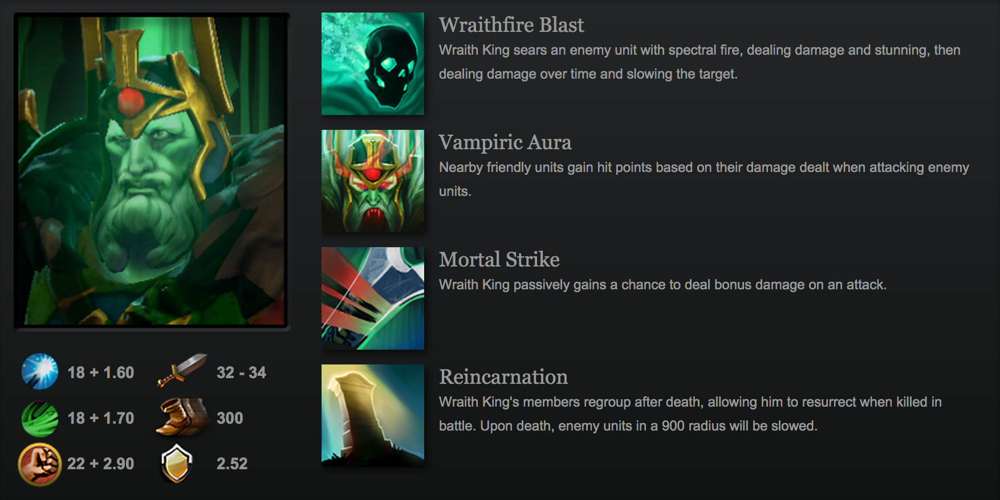
ABADDON
Description
The Font of Avernus is the source of a family's strength, a crack in primal stones from which vapors of prophetic power have issued for generations. Each newborn of the cavernous House Avernus is bathed in the black mist, and by this baptism they are given an innate connection to the mystic energies of the land.
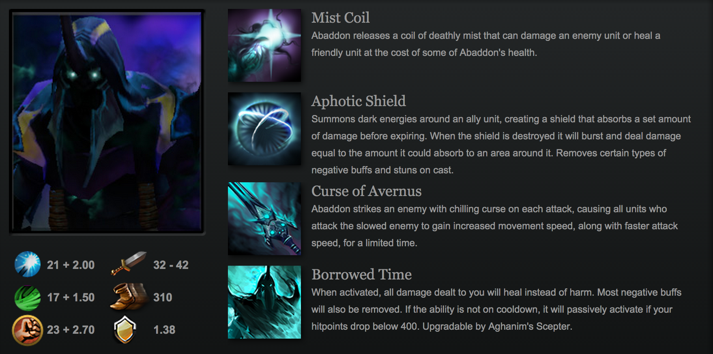
DROW RANGER
Description
Drow Ranger's given name is Traxex-a name well suited to the short, trollish, rather repulsive Drow people. But Traxex herself is not a Drow. Her parents were travelers in a caravan set upon by bandits, whose noisy slaughter of innocents roused the ire of the quiet Drow people.
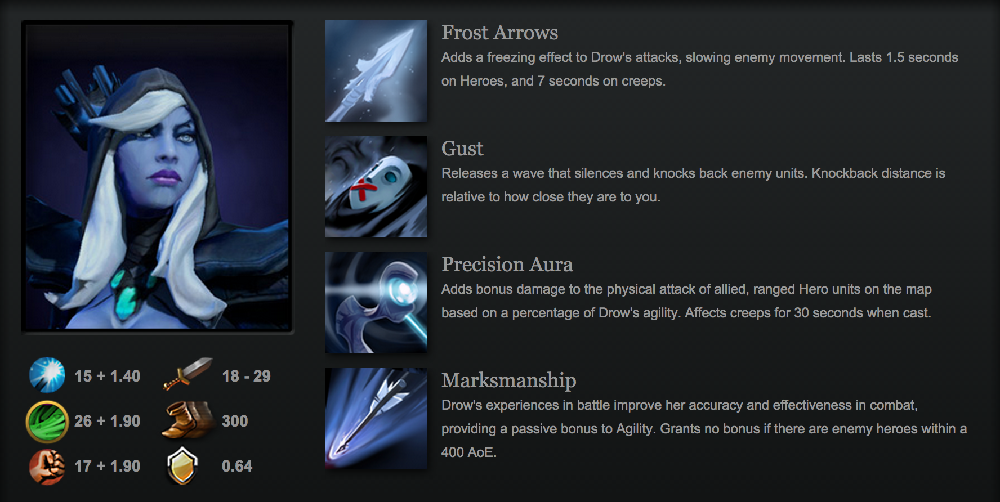
TERRORBLADE
Description
Terrorblade is the demon marauder--an outlaw hellion whom even other demons fear. A cosmic iconoclast, he stole from the Demon Lords, ignored the codified rites that should have bound his behavior, and broke every law of the seven Infernal Regions. For his crimes, he was taught this lesson: even Hell has a hell.
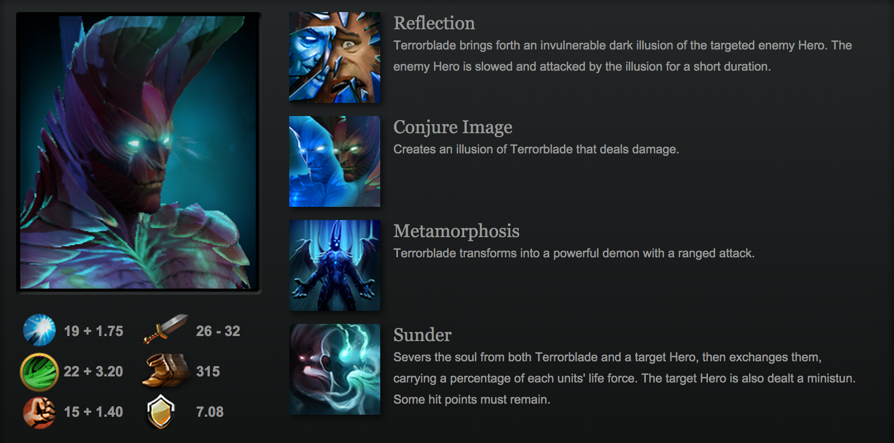
LICH
Description
In life, the frost-mage Ethreain (not yet a Lich) had used the threat of destructive ice to enslave entire kingdoms. His subjects, aided by a few desperate magicians, eventually grew bold enough to ambush him. Armed with enough charmed rope to bind him forever, they tied the frost mage to adamant weights and dropped him in a pool known chiefly for being bottomless.
PUCK
Description
While Puck seems at first glance a mischievous, childish character, this quality masks an alien personality. The juvenile form of a Faerie Dragon, a creature that lives for eons, Puck spends countless millennia in its childish form.
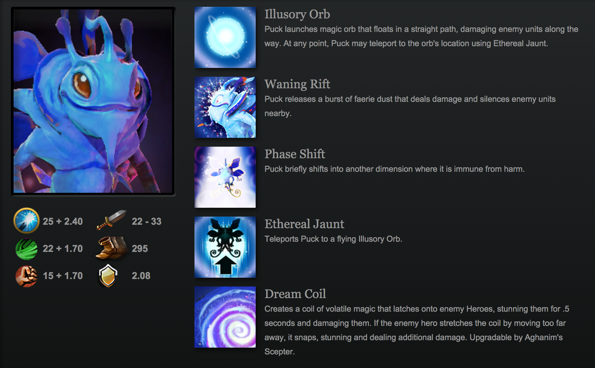
JAKIRO
Description
Even among magical beasts, a twin-headed dragon is a freak. Equal parts ice and fire, cunning and rage, the creature known as Jakiro glides over charred and ice-bound battlefields, laying waste to any who would bear arms against it. Pyrexae dragon clutches always contain two fledglings.
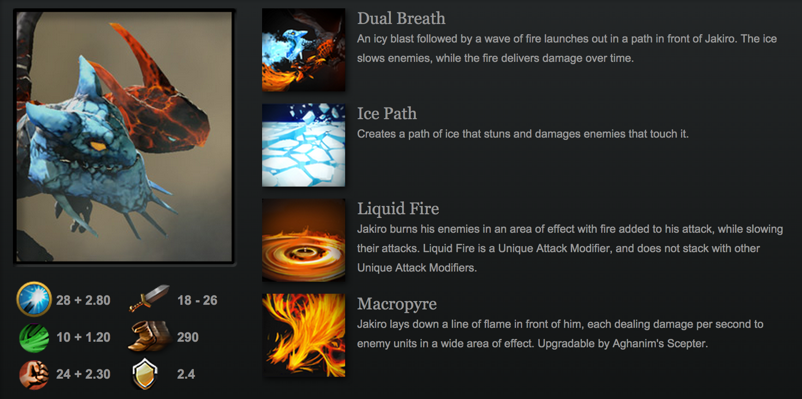
VISAGE
Description
Perched atop the entrance to the Narrow Maze sit the looming shapes of sneering gargoyles, the paths into the hereafter forever in their gaze. Beasts and birds, men and monsters, all creatures that die and choose to travel beyond must someday pass beneath their sight. For an untethered spirit, the decision to journey through the veil of death is irrevocable.
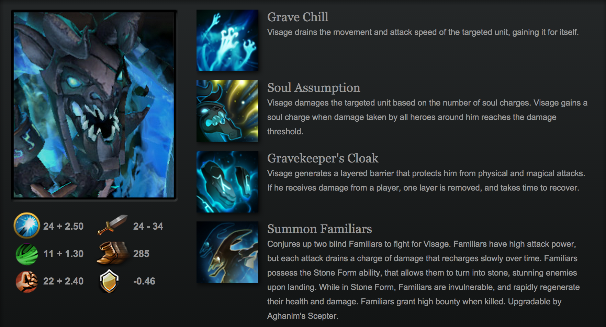
SHADOW FIEND
It is said that Nevermore the Shadow Fiend has the soul of a poet, and in fact he has thousands of them. Over the ages he has claimed the souls of poets, priests, emperors, beggars, slaves, philosophers, criminals and (naturally) heroes; no sort of soul escapes him. What he does with them is unknown. No one has ever peered into the Abysm whence Nevermore reaches out like an eel from among astral rocks.
LINA
Description
The sibling rivalries between Lina the Slayer, and her younger sister Rylai, the Crystal Maiden, were the stuff of legend in the temperate region where they spent their quarrelsome childhoods together. Lina always had the advantage, however, for while Crystal was guileless and naive, Lina's fiery ardor was tempered by cleverness and conniving.
FACELESS VOID
Description
Darkterror the Faceless Void is a visitor from Claszureme, a realm outside of time. It remains a mystery why this being from another dimension believes the struggle for the Nemesis Stones is worth entering our physical plane, but apparently an upset in the balance of power in this world has repercussions in adjacent dimensions.
PHANTOM LANCER
Description
The remote village of Pole had no knowledge of the wars raging in the heart of the kingdom. For them, the quiet of spear fishing, and a family meal were all that a full life required. Yet war came for them nonetheless. Joining the able-bodied conscripts as they filed passed their homes, the humble lancer Azwraith vowed to bring peace to his kingdom, and in so doing, his people.
EARTH SPIRIT
Description
Deep amid the Upland crags and cliffs there runs a seam of sacred jade long foresworn by highland miners. From this rare material, the likeness of the great general Kaolin was carved and buried at the head of a stone funerary army ten thousand strong--a force of soldiers and holy men, jesters and acrobats, carved by crafstmen and entombed for millennia in the dark embrace of the Earth.
BRISTLEBACK
Description
Never one to turn his back on a fight, Rigwarl was known for battling the biggest, meanest scrappers he could get his hands on. Christened Bristleback by the drunken crowds, he waded into backroom brawls in every road tavern between Slom and Elze, until his exploits finally caught the eye of a barkeep in need of an enforcer.
CRYSTAL MAIDEN
Description
Born in a temperate realm, raised with her fiery older sister Lina, Rylai the Crystal Maiden soon found that her innate elemental affinity to ice created trouble for all those around her. Wellsprings and mountain rivers froze in moments if she stopped to rest nearby; ripening crops were bitten by frost, and fruiting orchards turned to mazes of ice and came crashing down, spoiled.
MIRANA
Description
Born to a royal family, a blood princess next in line for the Solar Throne, Mirana willingly surrendered any claim to mundane land or titles when she dedicated herself completely to the service of Selemene, Goddess of the Moon. Known ever since as Princess of the Moon, Mirana prowls the sacred Nightsilver Woods searching for any who would dare poach the sacred luminous lotus.
OUTWORLD DEVOURER
Description
One of a lordly and magisterial race, Harbinger prowls the edge of the Void, sole surviving sentry of an outpost on the world at the rim of the abyss. From this jagged crystalline Outworld, forever on guard, he has gazed for eternities into the heavens, alert for any stirring in the bottomless night beyond the stars.
TROLL WARLORD
Description
It's an easy thing to offend a troll. A prickly and contentious race, trolls thrive on argument and strife, missing no excuse to raise their voices in dispute. Males grow to maturity in subterranean chambers beneath their matriarch's domicile, feeding and amusing themselves while contributing nothing.
LYCAN
Description
Banehallow was noble-born to the house of Ambry, the greatest of the landed castes in the old kingdom of Slom. Before the Fall, as the King's wants grew strange, and his court grew crowded with sorcerers and charlatans, the house of Ambry was the first to rise against the avarice of the throne.
BREWMASTER
Description
Deep in the Wailing Mountains, in a valley beneath the Ruined City, the ancient Order of the Oyo has for centuries practiced its rites of holy reverie, communing with the spirit realm in grand festivals of drink. Born to a mother's flesh by a Celestial father, the youth known as Mangix was the first to grow up with the talents of both lineages.
DRAGON KNIGHT
Description
After years on the trail of a legendary Eldwurm, the Knight Davion found himself facing a disappointing foe: the dreaded Slyrak had grown ancient and frail, its wings tattered, its few remaining scales stricken with scale-rot, its fangs ground to nubs, and its fire-gouts no more threatening than a pack of wet matchsticks.
INVOKER
Description
In its earliest, and some would say most potent form, magic was primarily the art of memory. It required no technology, no wands or appurtenances other than the mind of the magician. All the trappings of ritual were merely mnemonic devices, meant to allow the practitioner to recall in rich detail the specific mental formulae that unlocked a spell's power.
WARLOCK
Description
As Chief Curator and Head of Acquisitions for the Arcane Archives of the Ultimyr Academy, Demnok Lannik was tireless in his pursuit of lost, rare and forbidden tomes. No cursed temple was so foreboding, that any concern for his own survival could dissuade him from entering if rumors hinted that some pamphlet of primordial lore might still survive in its depths.
CHAOS KNIGHT
Description
The veteran of countless battles on a thousand worlds, Chaos Knight hails from a far upstream plane where the fundamental laws of the universe have found sentient expression. Of all the ancient Fundamentals, he is the oldest and most tireless, endlessly searching out a being he knows only as "The Light."
LUNA
Description
How had she been reduced to this? She was once the Scourge of the Plains, a merciless leader of men and beasts, and able to sow terror wherever she dared. Now she was far from her homeland, driven half mad from starvation and months of wandering, her army long dead or worse. As she stood at the edge of an ancient forest, a pair of glowing eyes spied on from an elder branch.
STORM SPIRIT
Description
Storm Spirit is literally a force of nature--the wild power of wind and weather, bottled in human form. And a boisterous, jovial, irrepressible form it is! As jolly as a favorite uncle, he injects every scene with crackling energy. But it was not always and there was tragedy in his creation. Generations ago, in the plains beyond the Wailing Mountains.
PHOENIX
Description
Alone across an untouched darkness gleamed the Keeper's first sun, a singular point of conscious light fated to spread warmth into the empty void. Through aeons beyond count, this blinding beacon set to coalescing its incalculable energy before bursting forth the cataclysmic flare of supernova.
EMBER SPIRIT
Description
Lost within the Wailing Mountains, the Fortress of Flares lay abandoned, its training halls empty, its courtyard covered in leaves and dust. Upon a dais in its sealed temple rests a topaz cauldron filled with ancient ash, remnants of a pyre for the warrior-poet Xin.
MAGNUS
Description
The master-smiths of Mt. Joerlak agree on only a single point: that the horn of a magnoceros is more precious than any alloy. And of all such horns, the largest and sharpest belongs to the beast they call Magnus. For half a generation, Magnus took easy sport goring hunters come to claim the treasures of his kin.
BANE
Description
When the gods have nightmares, it is Bane Elemental who brings them. Also known as Atropos, Bane was born from the midnight terrors of the goddess Nyctasha. A force of terror too powerful to be contained by sleep, he surfaced from her slumbers, fed upon her immortality, and stole his vaporous form from her inky blood.
MEDUSA
Description
The sacred science of Chymistry was a Darkbrew family tradition, but no Darkbrew had ever shown the kind of creativity, ambition, and recklessness of young Razzil. However, when adulthood came calling he pushed aside the family trade to try his hand at manufacturing gold through Alchemy.
ALCHEMIST
Description
The sacred science of Chymistry was a Darkbrew family tradition, but no Darkbrew had ever shown the kind of creativity, ambition, and recklessness of young Razzil. However, when adulthood came calling he pushed aside the family trade to try his hand at manufacturing gold through Alchemy.
CLINKZ
Description
At the base of the Bleeding Hills stretches a thousand-league wood, a place called The Hoven, where black pools gather the tarry blood of the uplands, and the king-mage Sutherex sits in benevolent rule. Once a sworn protector of the Hoven lands, Clinkz earned a reputation for his skill with a bow.
SLARDAR
Description
Slardar is a Slithereen, one of the Deep Ones, guardian of the great wealth of sunken cities and the ancient riches buried there. In the lightless gulf of the great ocean abysses, the Slithereen Guard carries his lure-light with him through the secret treasure rooms. Subaqueous thieves are drawn in by its friendly glow, never to return.


{kind=link}